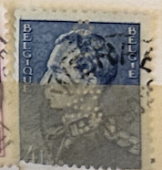
| SOURCE | TITLE| IMAGE MATCH | click to source page |
| HipStamp | Belgium #295 1.75 fr King Leopold III | Europe - Belgium & Colonies, General Issue Stamp / HipStamp | 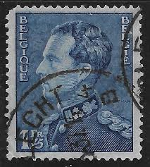 |
| Dreamstime.com | King Baudouin and Queen Fabiola Editorial Image - Image of stamp, kingdom: 95095115 | 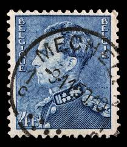 |
| 123RF | CZECHOSLOVAKIA - CIRCA 1945 A Stamp Printed In The Czechoslovakia Shows Portrait Of General Milan Rastislav Stefanik, Slovak Politician, Diplomat And Astronomer, Circa 1945 Stock Photo, Picture and Royalty Free Image. Image 18145251. |  |
| allnumis.com | 20 Francs - King Baudouin Type "Elström", duplicates - ZZ. Duplicates - Stamp - 51170 |  |
| eBay | Belgium - 1971 - King Baudouin - 20Fr - #2104 | eBay | 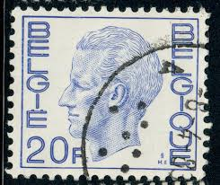 |
| Dreamstime.com | 306 Iii Belgium Stock Photos - Free & Royalty-Free Stock Photos from Dreamstime | 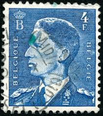 |
| Dreamstime.com | 262 Belgians King Stock Photos - Free & Royalty-Free Stock Photos from Dreamstime |  |
| ProBoards | Postmark Calendar | The Stamp Forum (TSF) |  |
| Dreamstime.com | Cancelled Postage Stamp Printed Belgium Shows King Leopold Stock Photos - Free & Royalty-Free Stock Photos from Dreamstime | 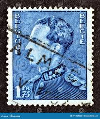 |
| HipStamp | Belgium, Scott #130, Used | Europe - Belgium & Colonies, General Issue Stamp / HipStamp | 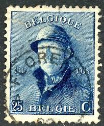 |
| ebid.net | BELGIUM, King Baudouin, blue 1953, 4F, #2 on eBid United States | 193982288 | 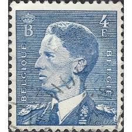 |
| eBay | Belgium - 1975 - King Baudouin - New Value - 13Fr - #2095 | eBay | 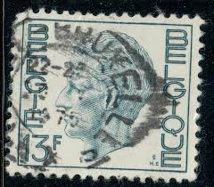 |
| Delcampe | Perfins - Belgium Perfin Perforé Lochung 'RH' R. Heinz SA, Anvers 1936 Mi. 426x, 1.75 Fr. Leopold III. (2 Scans) | 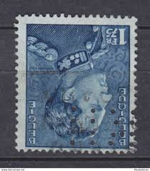 |
| HipStamp | Belgium#87 25c King Leopold I | Europe - Belgium & Colonies, General Issue Stamp / HipStamp | 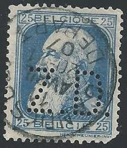 |
| HipStamp | Belgium 761 King Baudouin 1972 | Europe - Belgium & Colonies, General Issue Stamp / HipStamp | 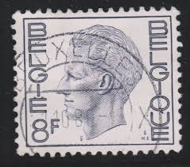 |
| Alamy | Postage stamp from Belgium in the King Baudouin Type "Elström" series issued in 1977 Stock Photo - Alamy | 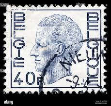 |
| Find Your Stamps Value | Value of 20f belgie belgique stamps | 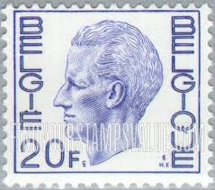 |
| Alamy | Postage stamp from Belgium in the King Baudouin Type "Elström" series issued in 1971 Stock Photo - Alamy | 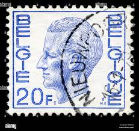 |
| Colnect | Belgium : Stamps [Series: King Baudouin Type "Elström"] [1/17] : Colnect 📮 | 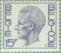 |
| Alamy | Postage stamp from Belgium in the King Baudouin Type "Elström" series issued in Stock Photo - Alamy |  |
| Alamy | BELGIUM - CIRCA 1976: a stamp printed in Belgium shows Desire Joseph Cardinal Mercier (1851-1926), was a Belgian cardinal of the Roman Catholic Church Stock Photo - Alamy | 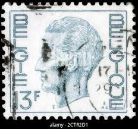 |
| Dreamstime.com | Baudouin of Belgium, King of the Belgians Editorial Stock Image - Image of postage, retro: 177157054 | 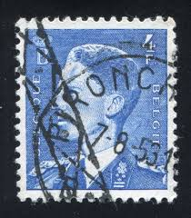 |
| eBay | BELGIUM 448 - King Baudouin Definitive "1952 Ultramarine" (pa54698) | eBay | 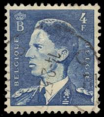 |
| eBay | Belgium - 1971 - King Baudouin - 18Fr - #2102 | eBay | 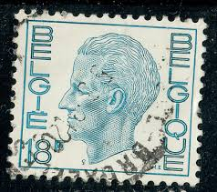 |
| Dreamstime.com | Type Elström Stock Photos - Free & Royalty-Free Stock Photos from Dreamstime | 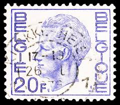 |
| Alamy | Postage stamp from Belgium in the King Baudouin Type "Elström" series issued in 1971 Stock Photo - Alamy | 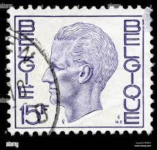 |
| Mystic Stamp | 769//802 - 1971 Belgium - Mystic Stamp Company | 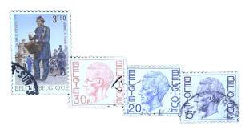 |
| Dreamstime.com | 266 Belgium Suit Stock Photos - Free & Royalty-Free Stock Photos from Dreamstime | 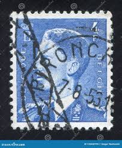 |
| Alamy | Stamp printed in belgium hi-res stock photography and images - Page 6 - Alamy | 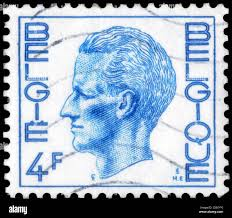 |
| HipStamp | Belgium 769 (used) 15f King Baudouin, lt vio (1971) | Europe - Belgium & Colonies, General Issue Stamp / HipStamp | 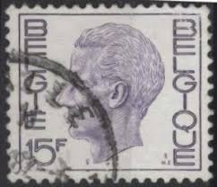 |
| HipStamp | Belgium 164 King Albert I 1924 | Europe - Belgium & Colonies, General Issue Stamp / HipStamp | 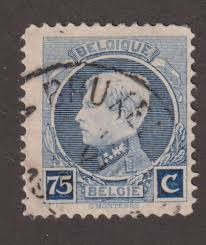 |
| Shutterstock | United States Circa 1986 Stamp Printed Stock Photo 105267512 | Shutterstock |  |
| mintindia.in | www.mintindia.in: www.mintindia.in:We have launched this website with primary objective to spread education about various coins of India and around the earth to help each numismatist, Introducing huge collections of the antique material | 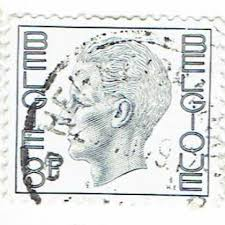 |
| eBay | Belgium 1936 #B186 Prince Baudouin - MNH | eBay | 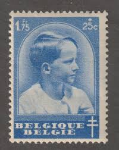 |
| Shutterstock | Moscow Russia August 18 2018 Stamp Stock Photo 1181342035 | Shutterstock | 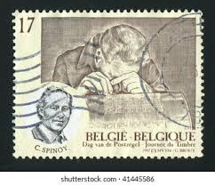 |
| Todocolección | belgica 2553/54** - año 1994 - visita del papa - Acquista Francobolli antichi di Belgio su todocoleccion | 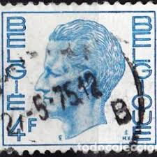 |
| ebid.net | Belgium 1971 King Baudouin 20F Used Stamp on eBid United States | 213756123 | 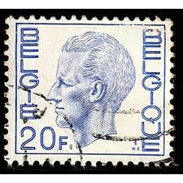 |
| Alamy | Belgian post office hi-res stock photography and images - Alamy | 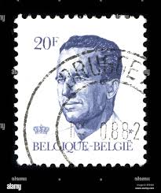 |
| eBay | Belgian Stamps 1971-1980 Year of Issue for sale | eBay |  |
| Alamy | BELGIUM - CIRCA 1960: a stamp printed in Belgium shows Alexandrine de Rye, Countess of Taxis, was Grand Mistress of the Netherlands Post, painting by Stock Photo - Alamy | 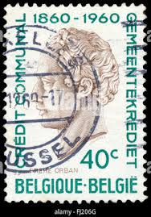 |
| Dreamstime.com | Vintage Stamp Printed in Belgium 1936 Shows Coat of Arms with a Lion Editorial Stock Photo - Image of lion, centime: 164075538 |  |
| Stamp Community Forum | Belgian K.s. Perfin - Stamp Community Forum | 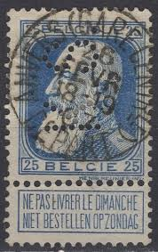 |
| fil-mag.be | coil stamps | 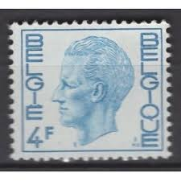 |
| Alamy | Postage stamp belgium hi-res stock photography and images - Alamy | 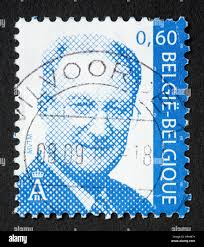 |
| Shutterstock | Aden 70 Cents Postage Stamp 1954 Stock Photo 1441320047 | Shutterstock | 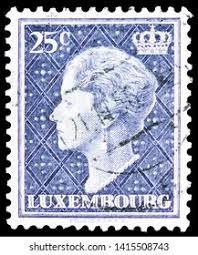 |
| eBay | France - 1957 - 20Fr - New Marianne Type - New Values - #17909 | eBay | 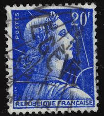 |
| eBay | STAMP BELGLQUE BELGIE 4F BLUE USED | eBay | 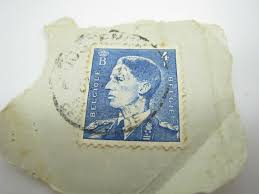 |
| Alamy | Stamp belgium hi-res stock photography and images - Page 13 - Alamy | 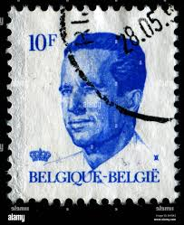 |
| Shutterstock | 7+ Thousand Royal Mail Crown Royalty-Free Images, Stock Photos & Pictures | Shutterstock | 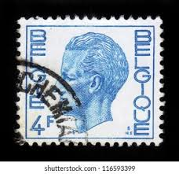 |
| Old-Stamps.com | King Baudouin I - Belgique - Belgie | 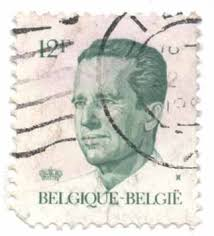 |
| Alamy | FRANCE - CIRCA 1925: a stamp printed in the France shows Light and Liberty, Allegory, Exhibition of Decorative Modern Arts at Paris, circa 1925 Stock Photo - Alamy | 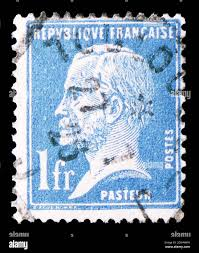 |
| HipStamp | France #192 Louis Pasteur Used CV$1.00 | Europe - France & Colonies, General Issue Stamp / HipStamp | 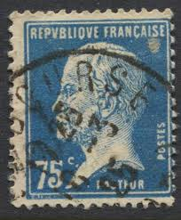 |
| Alamy | 75 c belgian centime hi-res stock photography and images - Alamy | 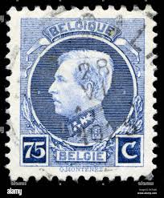 |
| Shutterstock | 5+ Thousand Postage Stamp Belgium Royalty-Free Images, Stock Photos & Pictures | Shutterstock | 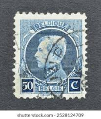 |
| eBay | Specimen, Belgium Sc753 King Baudouin | eBay | 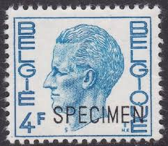 |
| Shutterstock | 8+ Thousand "belgium_stamp" Royalty-Free Images, Stock Photos & Pictures | Shutterstock | 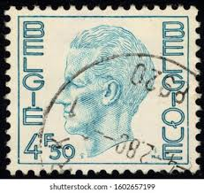 |
| Alamy | 24 september 1975 hi-res stock photography and images - Alamy | 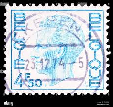 |
| HipStamp | Luxembourg 266: 10c Grand Duchess Charlotte, used, F-VF | Europe - Luxembourg, General Issue Stamp / HipStamp | |
| Find Your Stamps Value | King Gustaf V 25o Dark blue stamp price, value | |
| Shutterstock | 816 Baudouin Belgium Royalty-Free Images, Stock Photos & Pictures | Shutterstock |